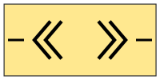

<link rel="import" href="../../../bower_components/polymer/polymer.html">

<link rel='import' href="../_styles/shared-image-style.html">

<link rel='import' href="../_behaviors/dropper-drag-behavior.html">


<dom-module id="flat-comment-dropper">

    <style include="shared-image-style"></style>

    <template strip-whitespace>
        <div id="surroundingDiv" on-down="handleDown" on-track="handleTrack" on-up="handleUp" class$="{{computeClass(isDragged)}}">
            
        </div>
    </template>

</dom-module>

<script>
    Polymer({
        is: "flat-comment-dropper",
        behaviors: [DropperDragBehavior],

        properties: {
        },

        generateElement: function(){
            let newFlatComment = $('<comment-node></comment-node>').get( 0 );
            return newFlatComment;
        }
    });
</script>